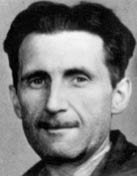

(1903 – 1950)

Yazdığı "Hayvan Çiftliği" ve "Bin Dokuz Yüz Seksen Dört" romanlarında insanlığın geleceğine karşı hiç de güzel kehanetlerde bulunmayan İngiliz yazar George Orwell, bazı açılardan günümüzü görmeyi başarabilmiş yazarlardandır. İnsanların hayatının her saniyesinin otoriter iktidar tarafından gözaltında tutuluşunu anlattığı "Bin Dokuz Yüz Seksen Dört" romanı bugünkü teknolojik gelişmelerle, istense günümüzde uygulanır.
Asıl adı ile "Eric Arthur Blair" olan George Orwell (okunuşu: Corc Orvıl), 25 Haziran 1903 günü Hindistan'ın Bihar bölgesinde doğdu, bir yaşında annesi tarafından Britanya'ya götürüldü. Yirminci yüzyıl İngiliz edebiyatının önde gelen kalemleri arasındadır. Orwell'ın hayatı, sonradan yazılarını etkileyecek olan deneyimlerle doludur. Eton Koleji'nden mezun olduktan sonra, o sırada bir İngiliz sömürgesi olan Burma'da bulunmuş; kısa süreliğine adanın polis teşkilatında görev yapmıştır. Bu memuriyet döneminde şahit olduğu acımasız uygulamalar emperyalizme karşı geliştirdiği derin öfkeye katkıda bulunmuştur. Gençlik döneminde Fransa'da bulunmuş, türlü mesleklerde çalışmış; para sıkıntısı gerek yazarlığa başlamadan önce gerekse ilk yapıtlarını kaleme aldığı yıllarda yakasını bırakmamıştır.
Orwell'ın ilk romanı, otobiyografik olup olmadığı halen tartışma konusu olan Paris ve Londra'da Beş Parasız'dır. 1933 yılında yayımlanmış olan bu eserde olaylar, ismi asla söylenmeyen bir karakterin ağzından aktarılmaktadır. Eserin kahramanı Paris'te İngilizce kursu vermek üzere bulunan, öğrencilerinin dersleri türlü bahanelerle bırakmasından sonra ise işsiz ve meteliksiz kalan genç bir adamdır. Avrupa'nın iki büyük başkentini toplumun en alt basamağındaki bir kişinin gözünden betimleyen bu eserden sonra Burma Günleri (1934) ve Papazın Kızı (1935) gelir.
Orwell'ın edebi hayatındaki ikinci kilometre taşı, daha sonra kaleme alacağı Daralma ile pek çok ortak noktası bulunan Zambak Solmasın adlı romandır. Orwell, bu eserde kendisinin de bir parçası olduğu dar gelirli ortadireğin yaşantısına ayna tutar; bu sınıfa mensup olanların hayatını adım adım kurutup anlamsızlaştıran, umutlarını ve hayallerini teker teker söndüren geçim derdine ve tekdüzeliğe isyan eder.
1937 yılında Orwell, maden işçilerinin hayatına dair bir araştırma olan ''Wigan İskelesi Yolu"nu kaleme alır. Ne var ki yazıları bu tarihten sonra bir süreliğine kesintiye uğrayacaktır; çünkü İspanya'da savaş davulları çalınmaya başlanmıştır. Orwell İspanya'ya gittiğinde İspanya'nın tarihi, içinde bulunduğu koşullar ve iktidar mücadelesi hakkında hiçbir şey bilmemektedir. Diğer pek çok Avrupalı aydının aksine Orwell, daha sonraları özgürlük ve faşizm arasındaki kücadeleyi anlamamakla suçlanmıştır. Hitler'in Almanya'da demokrasiyi vahşice yok etmesi ve Mosley'nin 1934 yılında İngiltere'de düşmanlarına karşı şiddet kullanması bile Orwell'in dikkatini çekmemiştir.
Yazara asıl ününü sağlayan II. Dünya Savaşı'nın hemen ardından, 1945 yılında yayımlanan Hayvan Çiftliği adlı roman olmuştur. Bu romanın Soğuk Savaş'ın başladığı günlerde çıkması, romanda anlatılan çiftliğin totaliter rejimle yönetilen ülkeleri andırması ve hem bu romanının hem de ardından gelen Bin Dokuz Yüz Seksen Dört romanının Batı medyası tarafından çok sevilmesi zaman zaman George Orwell'ın romanlarının anti-sosyalist kampanyalarda kullanılmak üzere CIA gibi örgütler tarafından şişirildiği dedikodusunu ortaya çıkarmıştır.
1949 yılında yayımlanan Bin Dokuz Yüz Seksen Dört adlı romanda ise geleceğin dünyasında (1984 yılında) geçen bir öykü anlatılmış ve bu dünya yine totaliter düşüncenin egemen olduğu karanlık bir atmosferde resmedilmiştir. "Oceania" adlı hayali ülkede geçen roman bir partiye üye olan elit kesimin yönettiği ve son sözü her zaman Büyük Birader adlı şefin söylediği korku dolu bir ortamı yansıtmaktadır. Gerçeklik Bakanlığı'nda çalışan Winston Smith ise bir yandan eskiden kalma yazıları gazete ideolojisine göre "düzeltirken" bir yandan da Büyük Birader'e karşı başkaldırı hayalleri kurmaktadır.
George Orwell 21 Ocak 1950 tarihinde Londra'da ölmüş, ardında on adet kitap ve sayısız makale bırakmıştır.
Seçme Romanları: Paris ve Londra'da Beş Parasız (1933), Burma Günleri (1934 – Can Yayınları, 2012), Papazın Kızı (1935), Zambak Solmasın (1936), Wigan İskelesi Yolu (1937), Katalonya'ya Selam (1938), Daralma (1939), Hayvan Çiftliği (1945 – Can Yayınları, 2012), Bin Dokuz Yüz Seksen Dört (1949 – Can Yayınları, 2011)